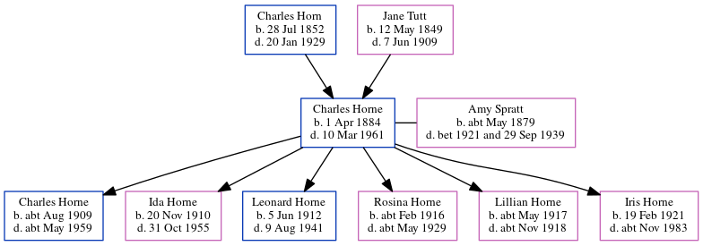

Charles Henry Horne 1884 - 1961
[ Home ] | [ Calendar ] | [ Surnames Index ] | [ Errors ] | [ Family History ]A market gardener worker and scholar and the eldest of 3 children of Charles Horn (a waggoner on a farm) and Jane Tutt (a laundress), Charles Horne, the great-uncle of Nigel Horne, was born in St Peters, Thanet, Kent, England on 1 Apr 18841,2,3,4,5,6 and married Amy Spratt (with whom he had 6 children: Charles Isaac, Ida May, Leonard Edmund, Rosina Ellen, Lillian A and Iris Joan) in Thanet, Kent, England around Nov 19088.
During his life, he was living at Drapers Cottage, Margate, Kent on 5 Apr 189113; at 15 Haine Cottages, St Lawrence in Thanet on 31 Mar 190114 - less than a mile from his brother Isaac Horne who was living at 15 Haine Cottages, St Lawrence in Thanet; at Walnut Tree Cottages, Haine in Thanet on 2 Apr 191112; at Sacketts Hill Farm, St Peters in Thanet on 19 Jun 192115; on Refectory House, Tothill Street, Minster in Thanet in 19389 and on 29 Sept 19394; and at 18 Tothill Street, Minster in Thanet in 195311 and in 195510. In 1921 he was working at Joseph Gunson Farmer at Sacketts Hill Farm, St Peters, Thanet, Kent, England.
He died on 10 Mar 1961 in Dover, Kent, England5,7.
Parents
- Charles was born on 28 Jul 1852
- Jane was born on 12 May 1849
Children
- Charles Isaac was born c. Aug 1909
- Ida May was born on 20 Nov 1910
- Leonard Edmund was born on 5 Jun 1912
- Rosina Ellen was born c. Feb 1916
- Lillian A was born c. May 1917
- Iris Joan was born on 19 Feb 1921
Citations
- 1891 England Census Online publication - Provo, UT, USA: The Generations Network, Inc., 2005.Original data - Census Returns of England and Wales, 1891. Kew, Surrey, England: The National Archives of the UK (TNA): Public Record Office (PRO), 1891. Data imaged from The National
- 1901 England Census Online publication - Provo, UT, USA: The Generations Network, Inc., 2005.Original data - Census Returns of England and Wales, 1901. Kew, Surrey, England: The National Archives of the UK (TNA): Public Record Office (PRO), 1901. Data imaged from the National
- 1911 England Census Online publication - Provo, UT, USA: Ancestry.com Operations, Inc., 2011.Original data - Census Returns of England and Wales, 1911. Kew, Surrey, England: The National Archives of the UK (TNA), 1911. Data imaged from the National Archives, London, England.
- 1939 Register - Findmypast (was the head of the household)
- England & Wales, Death Index: 1984-2005 Online publication - Provo, UT, USA: The Generations Network, Inc., 2007.Original data - General Register Office. England and Wales Civil Registration Indexes. London, England: General Register Office. © Crown copyright. Published by permission of the Cont
- England & Wales, FreeBMD Birth Index, 1837-1915 Online publication - Provo, UT, USA: The Generations Network, Inc., 2006.Original data - General Register Office. England and Wales Civil Registration Indexes. London, England: General Register Office. © Crown copyright. Published by permission of the Cont
- England & Wales, National Probate Calendar (Index of Wills and Administrations),1861-1941 Online publication - Provo, UT, USA: Ancestry.com Operations Inc, 2010.Original data - Principal Probate Registry. Calendar of the Grants of Probate and Letters of Administration made in the Probate Registries of the High Court of Justice in England. Londo
- 1911 England Census Online publication - Provo, UT, USA: Ancestry.com Operations, Inc., 2011.Original data - Census Returns of England and Wales, 1911. Kew, Surrey, England: The National Archives of the UK (TNA), 1911. Data imaged from the National Archives, London, England.
- 1936 Kelly's Thanet Directory
- 1955 Kelly's Thanet Directory
- 1953 Kelly's Thanet Directory
- 1911 Census for England & Wales - Findmypast (was age 27 and the head of the household)
- 1891 England, Wales & Scotland Census - Findmypast (was age 7 and the son of the head of the household)
- 1901 England, Wales & Scotland Census - Findmypast (was age 17 and the son of the head of the household)
- 1921 Census Of England & Wales - Findmypast (was age 51 and the head of the household)
Media
Charles Henry Horne - probate

1936 Kelly's Thanet Directory

1955 Kelly's Thanet Directory

1953 Kelly's Thanet Directory

1901 England, Wales & Scotland Census Transcription - GBC-1901-0007467101
1939 Register Transcription - TNA-R39-1820-1820E-007-15
England & Wales births 1837-2006 - BMD/B/1884/2/AZ/000291/143
England & Wales marriages 1837-2008 - BMD/M/1908/4/AZ/000186/226
1911 Census for England & Wales - GBC/1911/RG14/04511/0115/1
1891 England, Wales & Scotland Census - GBC/1891/0005858742
1901 England, Wales & Scotland Census - GBC/1901/0007467103
1911 England, Wales - GBC-1911-RG14-04511-0115-3
1939 Register Transcription - TNA-R39-1820-1820E-007-17
England & Wales deaths 1837-2007 - BMD/D/1961/1/AZ/000649/121
1911 England, Wales & Scotland Census Transcription - GBC-1911-RG14-04511-0115-4
1939 Register Transcription - TNA-R39-1820-1820E-007-16
1921 Census of England & Wales - GBC/1921/RG15/04458/0431/01
Family Tree
Map
Generated by ged2site. Last updated on Jul 3, 2024
Known Issues
Surname is different from both parents
Listed in the residence for 1938, but spouse Amy Spratt is not